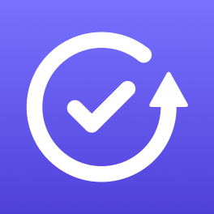

Looping
Looping 지원
Looping은 금방 끝나는 작은 습관을 정한 시간마다 알려 주고, 알림과 위젯에서 바로 완료할 수 있게 도와주는 앱입니다.
알림이 오지 않아요
iPhone 설정 > Looping > 알림에서 알림이 허용되어 있는지, 앱의 설정에서 "알림 받기"가 켜져 있는지 확인해 주세요. 루틴을 멈췄거나 껐다면 다시 켜야 알림이 옵니다.
위젯은 어떻게 추가하나요?
홈 화면의 빈 곳을 길게 누르고, 왼쪽 위 편집 > 위젯 추가에서 Looping을 고르세요. 앱의 설정 > 위젯 추가 방법에서도 순서를 볼 수 있습니다.
앱을 오래 열지 않으면 알림이 줄어든다고 나와요
iPhone은 앱 하나가 미리 예약할 수 있는 알림 수를 제한합니다. 알림이 아주 많으면 그 전에 앱을 한 번 열어 달라고 알려 드리며, 앱을 열면 다시 채워집니다.
데이터는 어디에 저장되나요?
모든 루틴과 기록은 기기 안에만 저장되고 어디로도 전송되지 않습니다. 자세한 내용은 개인정보 처리방침을 확인해 주세요.
문의
궁금한 점이나 불편한 점은 looping@potato.pizza로 메일을 보내 주세요. 앱의 설정 > 문의하기에서도 보낼 수 있어요.
Looping Support
Looping reminds you of small habits at the times you choose and lets you complete them right from notifications and widgets.
I'm not getting reminders
Check that notifications are allowed in iPhone Settings > Looping > Notifications, and that Reminders is turned on in the app's Settings. If you paused or turned off a habit, turn it back on to get reminders.
How do I add a widget?
Touch and hold an empty area of the Home Screen, tap Edit in the top-left corner, choose Add Widget, and select Looping. You can also find the steps in the app under Settings > How to Add Widgets.
The app says reminders will thin out if I don't open it
iPhone limits how many notifications one app can schedule in advance. If you have a lot of reminders, the app lets you know before that happens, and opening the app once refills them.
Where is my data stored?
All habits and history stay on your device and are never sent anywhere. See the Privacy Policy for details.
Contact
For questions or feedback, please email looping@potato.pizza. You can also use Settings > Contact Us in the app.
Looping サポート
Loopingは、小さなルーティンを決めた時間にお知らせし、通知やウィジェットからすぐに完了できるアプリです。
通知が届きません
iPhoneの設定 > Looping > 通知 で通知が許可されているか、アプリの設定で「通知を受け取る」がオンになっているかを確認してください。ルーティンを停止またはオフにしている場合は、オンに戻すと通知が届きます。
ウィジェットを追加するには?
ホーム画面の空いている場所を長押しし、左上の編集 > ウィジェットを追加 からLoopingを選んでください。アプリの設定 > ウィジェットの追加方法 でも手順を確認できます。
アプリを開かないと通知が少なくなると表示されます
iPhoneでは、1つのアプリが事前に予約できる通知の数に上限があります。通知が非常に多い場合はその前にお知らせし、アプリを一度開くと元に戻ります。
データはどこに保存されますか?
すべてのルーティンと記録はデバイス内にのみ保存され、どこにも送信されません。詳しくはプライバシーポリシーをご覧ください。
お問い合わせ
ご質問やご意見はlooping@potato.pizzaまでメールでお寄せください。アプリの設定 > お問い合わせからも送れます。
Looping 支持
Looping会在你设定的时间提醒你要做的小事,并让你直接在通知和小组件中完成。
收不到提醒
请确认在 iPhone 设置 > Looping > 通知 中已允许通知,并确认应用设置中的"接收提醒"已开启。如果你暂停或关闭了某个习惯,重新开启后才会收到提醒。
如何添加小组件?
按住主屏幕的空白区域,轻点左上角的编辑 > 添加小组件,然后选择Looping。你也可以在应用的设置 > 如何添加小组件中查看步骤。
应用提示如果不打开,提醒会减少
iPhone 限制了每个应用可以提前安排的通知数量。如果提醒非常多,应用会提前告诉你,打开一次应用即可恢复。
数据存储在哪里?
所有习惯和记录都只保存在你的设备上,不会发送到任何地方。详情请参阅隐私政策。
联系
如有问题或建议,请发送邮件至looping@potato.pizza。也可以在应用的设置 > 联系我们中发送。